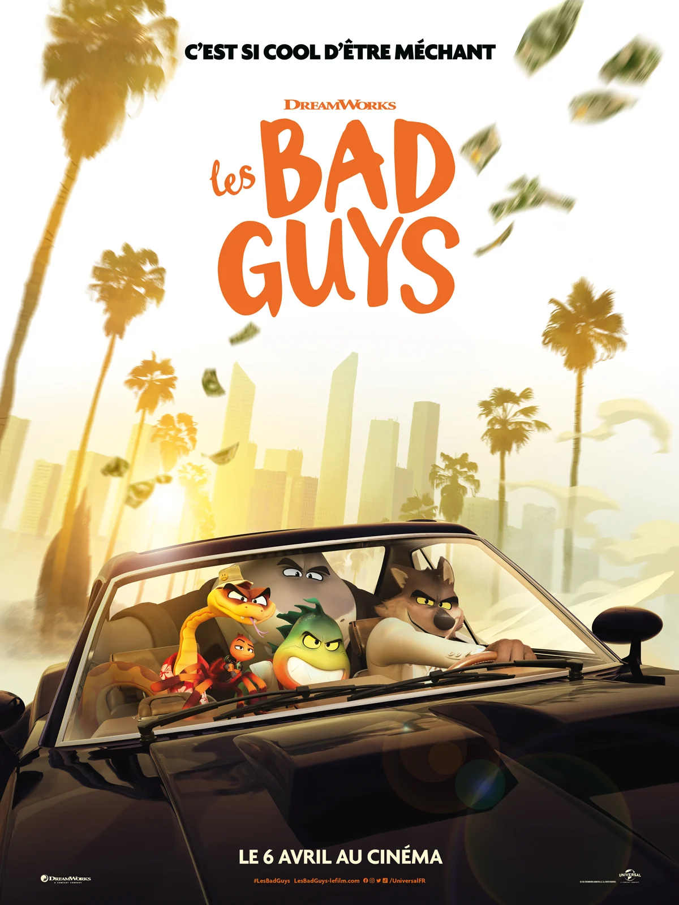

Les Bad Guys
LES BAD GUYS, la nouvelle comédie d’aventures de Dreamworks Animations, inspirée par la série éponyme de livres pour enfants à succès, met en scène une bande d’animaux, redoutables criminels de haut vol, qui sont sur le point de commettre leur méfait le plus éclatant : devenir des citoyens respectables.
Ces cinq compères sont tristement célèbres pour leurs aptitudes respectives au crime :
- M. Loup, le fringant pickpocket
- M. Serpent, le perceur de coffre forts blasé
- M. Requin, l’expert en camouflage au sang très très froid
- M. Piranha, le gros bras excessivement soupe au lait de la bande
- Mlle Tarentule, la pirate informatique dont les talents de hacker sont aussi aiguisés que sa langue.
Mais après des années d’incalculables méfaits, ceux qui sont devenus sans conteste les malfrats les plus recherchés du monde, finissent par se faire arrêter. Mr Loup conclut alors un marché (qu’il n’a évidemment pas l’intention d’honorer) afin de s’éviter ainsi qu’à ses compères, bien des années en prison : les Bad Guys vont devenir honorables.
Sous la tutelle de leur nouveau mentor, un cochon d’Inde aussi adorable qu’arrogant, le Professeur Marmelade, les Bad Guys sont bien partis pour rouler leur monde et faire croire à tous qu’ils ont changé. Mais ce faisant, Mr Loup commence à comprendre que faire vraiment le bien pourrait être la clef de ce qui lui a toujours manqué : la reconnaissance. Alors qu’un nouveau méchant s’en prend à la ville, va-t-il pouvoir persuader ses acolytes de le suivre sur le chemin de la rédemption et de devenir enfin des gentils ?